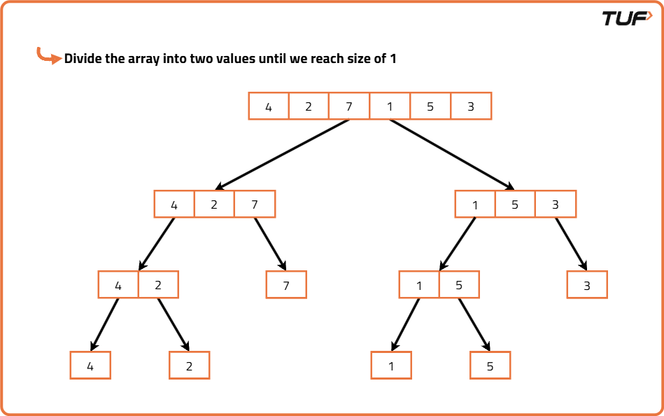
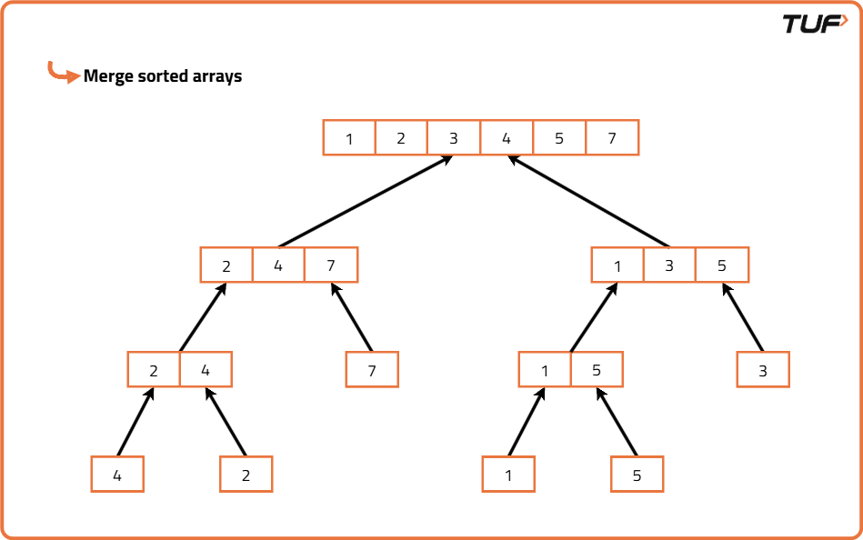

Merge Sort Algorithm
Problem Statement: Given an array of size n, sort the array using Merge Sort.
Examples
Input : N=7,arr[]={3,2,8,5,1,4,23} Output : {1,2,3,4,5,8,23} Explanation : Given array is sorted in non-decreasing order. Input : N=5, arr[]={4,2,1,6,7} Output : {1,2,4,6,7} Explanation : Given array is sorted in non-decreasing order.
Disclaimer: Here is the practice link to help you assess your knowledge better. It's highly recommend trying to solve it before looking at the solution.
Merge Sort Algorithm
Algorithm
Merge Sort is a classic divide and conquer algorithm. The core idea is based on breaking down a big problem into smaller, manageable sub-problems i.e. sorting smaller arrays and then merging those solutions to get the final sorted result.
It is much easier to merge two sorted arrays than to sort a large unsorted one. Therefore, instead of trying to sort the entire array at once, Merge Sort breaks it into halves repeatedly until we reach arrays of size 1 (which are trivially sorted), and then merges them back in sorted order. This makes the algorithm efficient and predictable, especially for large datasets.
It is much easier to merge two sorted arrays than to sort a large unsorted one. Therefore, instead of trying to sort the entire array at once, Merge Sort breaks it into halves repeatedly until we reach arrays of size 1 (which are trivially sorted), and then merges them back in sorted order. This makes the algorithm efficient and predictable, especially for large datasets.
- If the array has only one or zero elements, it is already sorted, so we return it as is.
- Else, we divide the array into two halves by finding the middle index.
- We then apply the merge sort algorithm recursively on each of the two halves to sort them individually.
- Once we have two sorted halves, we need to merge them into a single sorted array.
- To merge, we compare elements from both halves one by one and place the smaller element into a new array, continuing this until all elements from both halves are used.
- This process is repeated at every level of recursion, and finally, we get one fully sorted array after all merges are complete.


Code
#include <bits/stdc++.h>
using namespace std;
class Solution {
public:
// Function to merge two halves of the array
void merge(vector<int>& arr, int low, int mid, int high) {
// Create temp arrays
vector<int> temp;
int left = low, right = mid + 1;
// Merge two sorted halves
while (left <= mid && right <= high) {
if (arr[left] <= arr[right])
temp.push_back(arr[left++]);
else
temp.push_back(arr[right++]);
}
// Copy remaining elements from left half
while (left <= mid)
temp.push_back(arr[left++]);
// Copy remaining elements from right half
while (right <= high)
temp.push_back(arr[right++]);
// Copy sorted elements back to original array
for (int i = low; i <= high; i++)
arr[i] = temp[i - low];
}
// Recursive merge sort function
void mergeSort(vector<int>& arr, int low, int high) {
if (low >= high)
return;
// Find the middle index
int mid = (low + high) / 2;
// Recursively sort left half
mergeSort(arr, low, mid);
// Recursively sort right half
mergeSort(arr, mid + 1, high);
// Merge the two sorted halves
merge(arr, low, mid, high);
}
};
int main() {
vector<int> arr = {5, 2, 8, 4, 1};
Solution sol;
sol.mergeSort(arr, 0, arr.size() - 1);
for (int x : arr)
cout << x << " ";
cout << endl;
return 0;
}
Complexity Analysis
Time Complexity: O(N*logN), merging two arrays take linear time and array is recursively divided into halves (logN times).Space Complexity: O(N), we use a temporary array to store elements in sorted order.